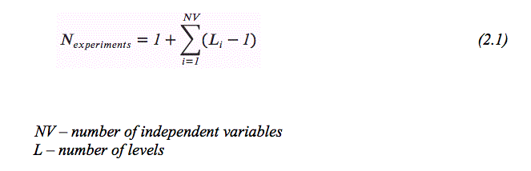

DESIGN OF EXPERIMENTS
Design Steps
The design of an experiment involves the following steps:
- Selection of independent variables
- Selection of number of level settings for each independent variable
- Selection of orthogonal array
- Assigning the independent variables to each column
- Conducting the experiments
- Analyzing the data
- Inference
The details of the above steps are given below.
1. Selection of the independent variables
Before conducting the experiment, the knowledge of the product/process under investigation is of prime importance for identifying the factors likely to influence the outcome. In order to compile a comprehensive list of factors, the input to the experiment is generally obtained from all the people involved in the project.
2. Deciding the number of levels
Once the independent variables are decided, the number of levels for each variable is decided. The selection of number of levels depends on how the performance parameter is affected due to different level settings. If the performance parameter is a linear function of the independent variable, then the number of level setting shall be 2. However, if the independent variable is not linearly related, then one could go for 3, 4 or higher levels depending on whether the relationship is quadratic, cubic or higher order. In the absence of exact nature of relationship between the independent variable and the performance parameter, one could choose 2 level settings. After analyzing the experimental data, one can decide whether the assumption of level setting is right or not based on the percent contribution and the error calculations.
3. Selection of an orthogonal array
Before selecting the orthogonal array, the minimum number of experiments to be conducted shall be fixed based on the total number of degrees of freedom present in the study. The minimum number of experiments that must be run to study the factors shall be more than the total degrees of freedom available. In counting the total degrees of freedom the investigator commits 1 degree of freedom to the overall mean of the response under study. The number of degrees of freedom associated with each factor under study equals one less than the number of levels available for that factor. Hence the total degrees of freedom without interaction effect is 1+ as given by equation 2.1. For example, in case of 11 independent variables, each having 2 levels, the total degrees of freedom is 12. Hence the selected orthogonal array shall have at least 12 experiments. An L12 orthogonal satisfies this requirement. Once the minimum number of experiments is decided, the further selection of orthogonal array is based on the number of independent variables and number of factor levels for each independent variable.
4. Assigning the independent variables to columns
The order in which the independent variables are assigned to the vertical column is very essential. In case of mixed level variables and interaction between variables, the variables are to be assigned at right columns as stipulated by the orthogonal array. Finally, before conducting the experiment, the actual level values of each design variable shall be decided. It shall be noted that the significance and the percent contribution of the independent variables changes depending on the level values assigned. It is the designers responsibility to set proper level values.
5. Conducting the experiment
Once the orthogonal array is selected, the experiments are conducted as per the level combinations. It is necessary that all the experiments be conducted. The interaction columns and dummy variable columns shall not be considered for conducting the experiment, but are needed while analyzing the data to understand the interaction effect. The performance parameter under study is noted down for each experiment to conduct the sensitivity analysis.
6. Analysis of the data
Since each experiment is the combination of different factor levels, it is essential to segregate the individual effect of independent variables. This can be done by summing up the performance parameter values for the corresponding level settings. For example, in order to find out the main effect of level 1 setting of the independent variable 2 (“Introduction to Taguchi Method” Table 2.1), sum the performance parameter values of the experiments 1, 4 and 7. Similarly for level 2, sum the experimental results of 2, 5 and 7 and so on. Once the mean value of each level of a particular independent variable is calculated, the sum of square of deviation of each of the mean value from the grand mean value is calculated. This sum of square deviation of a particular variable indicates whether the performance parameter is sensitive to the change in level setting. If the sum of square deviation is close to zero or insignificant, one may conclude that the design variable is not influencing the performance of the process. In other words, by conducting the sensitivity analysis, and performing analysis of variance (ANOVA), one can decide which independent factor dominates over other and the percentage contribution of that particular independent variable.
7. Inference
From the above experimental analysis, it is clear that the higher the value of sum of square of an independent variable, the more it has influence on the performance parameter. One can also calculate the ratio of individual sum of square of a particular independent variable to the total sum of squares of all the variables. This ratio gives the percent contribution of the independent variable on the performance parameter.
Source: http://www.ecs.umass.edu/mie/labs/mda/fea/sankar/chap2.html